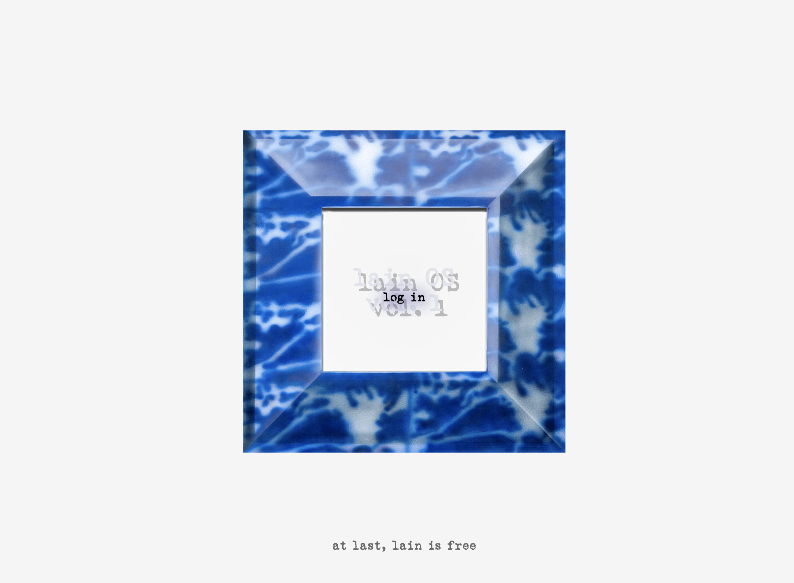

lain-os-is.online
website commission for absurd trax's compliation, lain os is online vol. 1
github repo


garbage-time-is-running-out.surge.sh (archived)
art by ea, texts co-written by gpt-3 and me

twitter bot that scrapes and rearranges walter benjamin's "work of art in the age of mechanical reproduction"